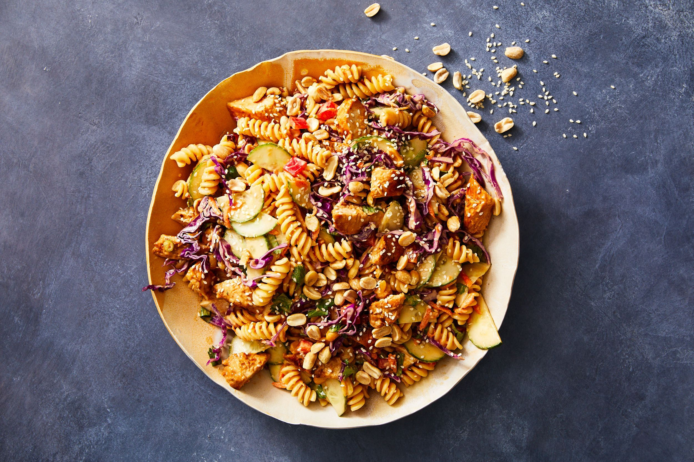

Dad's Favorite Peanut Butter

you can find all recipes here:All recipes
Description
Peanut butter is made from ground peanuts that have been roasted. Sugar, salt (sodium), oils (fat) and additives that prevent separation may also be added. It is considered a protein food according to Canada's Food Guide. Peanut butter also provides you with fibre, healthy fats, vitamin E and folate.
Ingredients
- 2 cups (470 ml) peanuts
- 1 1⁄2 teaspoons (7 ml) peanut oil or vegetable oil (optional)
- 1⁄2 teaspoon (2 ml) sugar (optional)
- 1 1⁄2 teaspoons (7 ml) molasses, honey, or brown sugar (optional)
- pinch of salt (optional)
Steps
- Prepare the peanuts.
-
Roast the peanuts (optional) (2 hours).
- Pulse your peanuts in a food processor until they are ground.
-
Process your peanuts for 1 minute.
- Scrape peanuts down from the food processor bowl into the bottom, as needed, when processing the peanuts
- Scrape the peanut butter into a bowl when you're done
-
Add salt and sugar to taste if needed.
-
Add small quantities of brown sugar, molasses, or honey, if you prefer a sweeter taste
-
Spoon peanut butter into an airtight container.